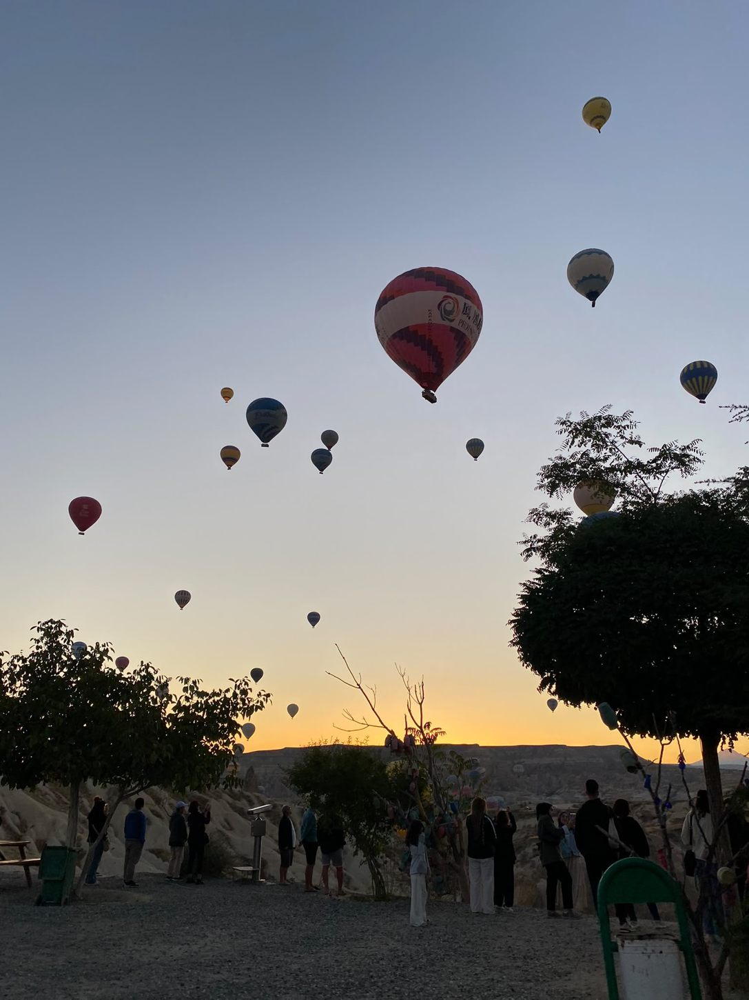
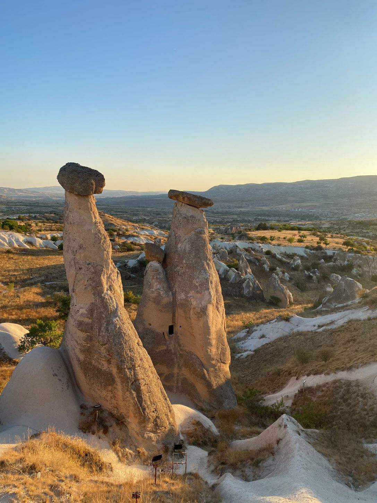
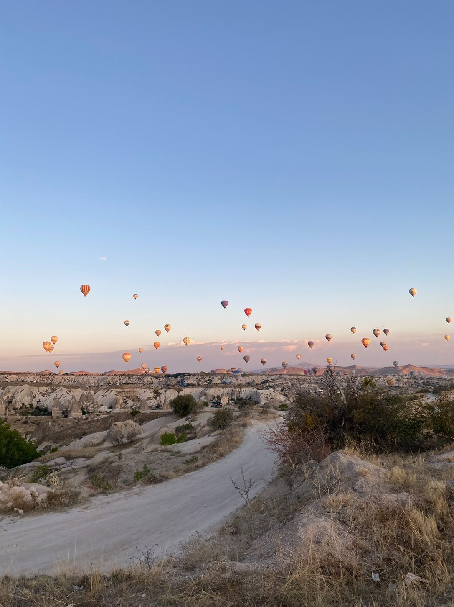
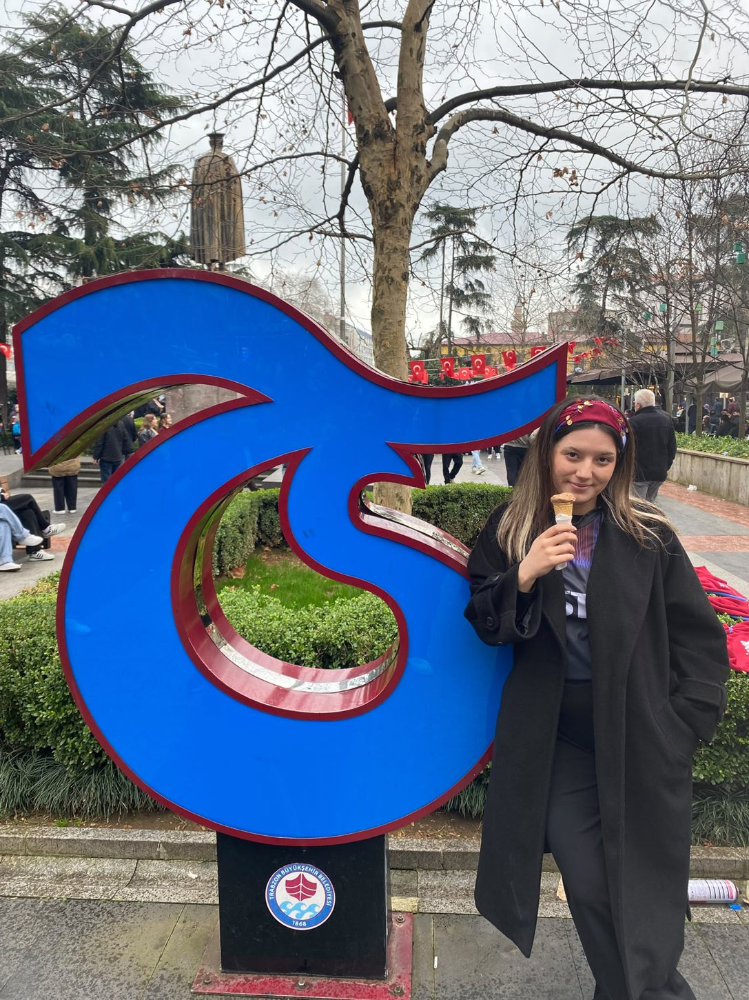
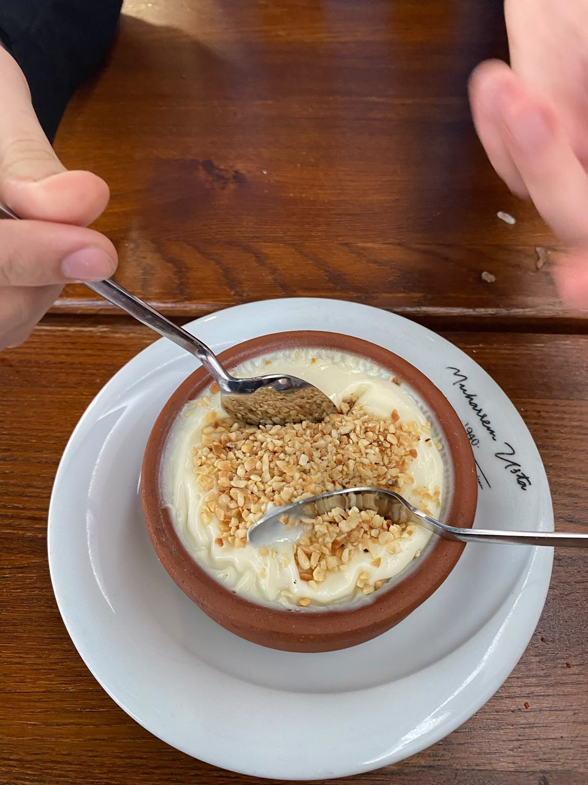
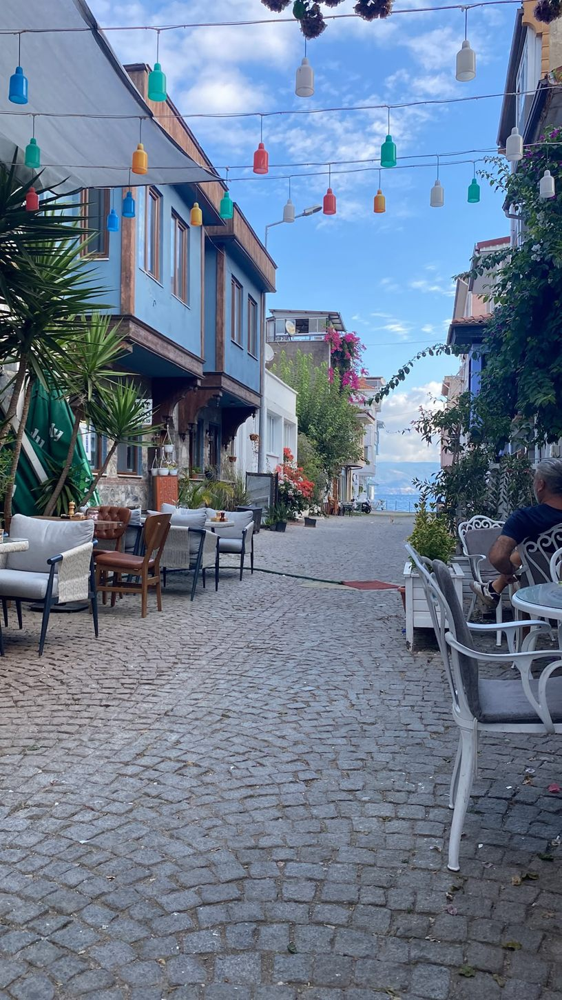
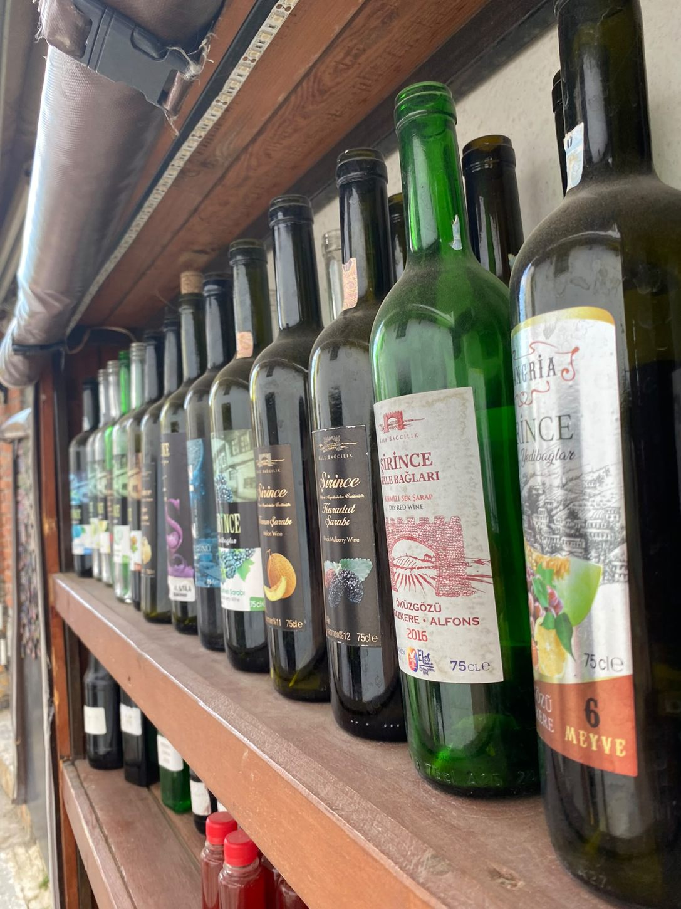
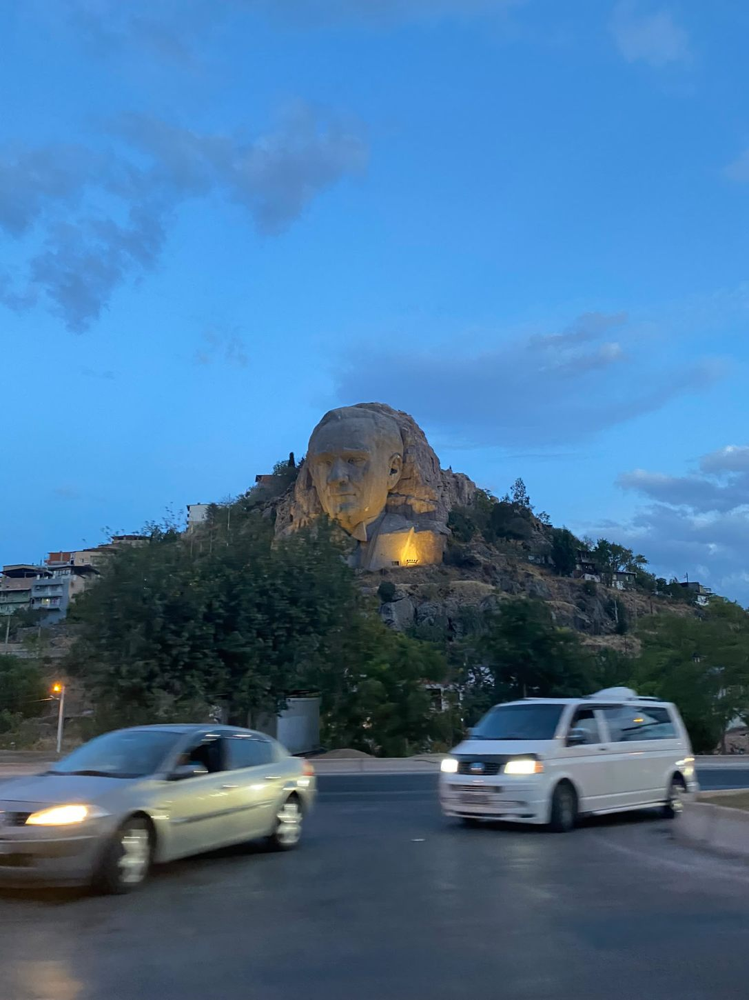
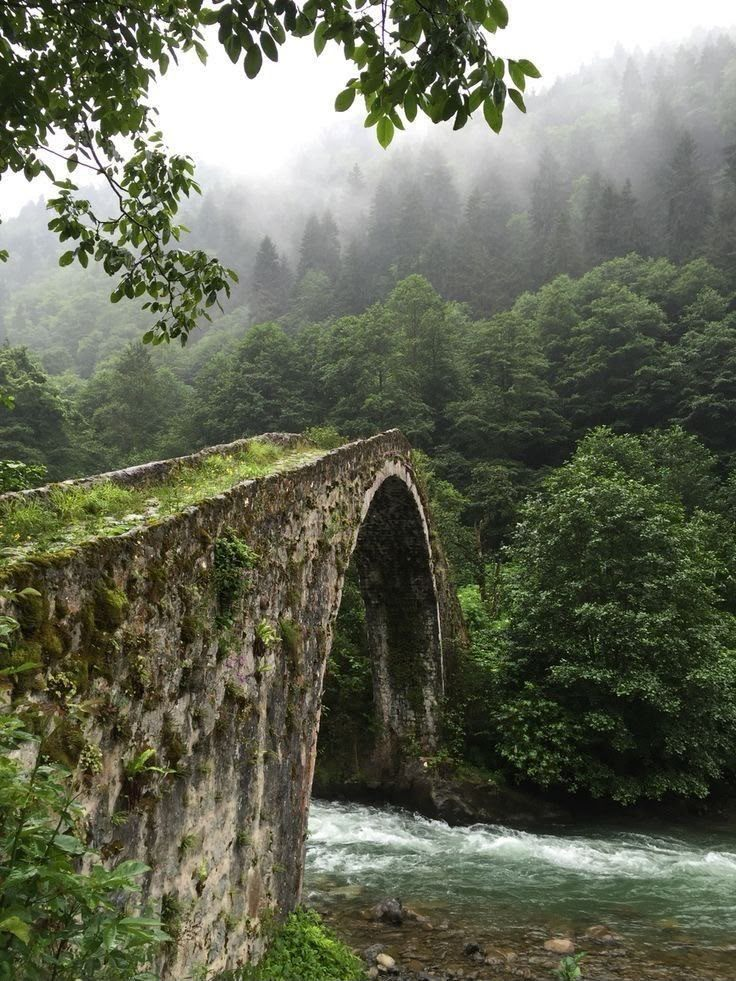
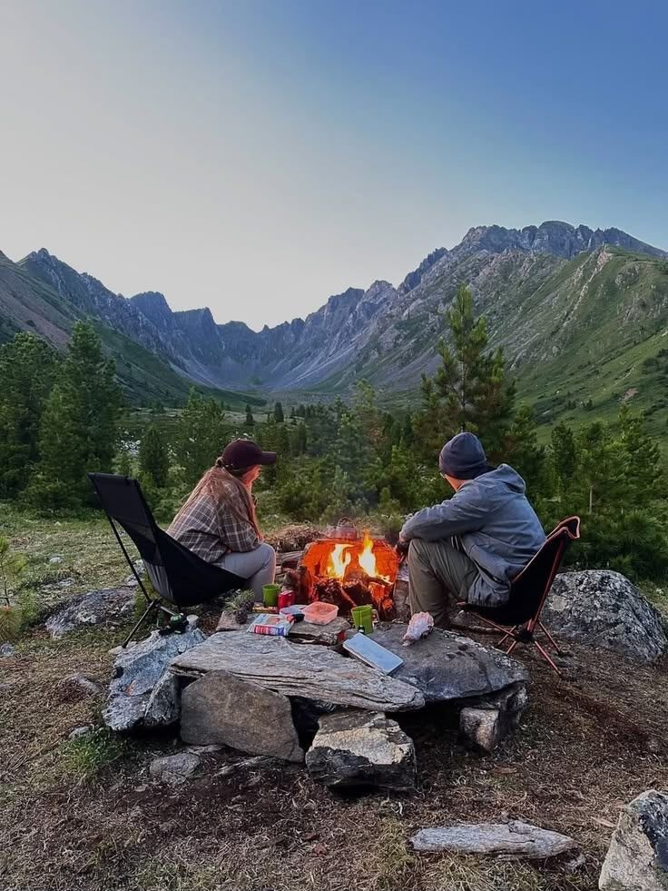

Cappadocia
Some places feel almost unreal. The sunrise balloons and extraordinary landscape made this trip unforgettable.


Two interactive maps that connect the places I have explored with the places that are part of my everyday life.
From my hometown Rize to the summer coast: some of the places that have shaped my memories.
Zoom in and select a marker to read the story behind a place.
Technical feature: OpenLayers hides the entire marker layer below zoom 7. The map source uses wrapX: false to prevent repeated worlds.
Campus life, riding, and the neighborhoods where I enjoy spending time.
Technical feature: Leaflet adds or removes its marker layer depending on zoom. Tile repetition is disabled with noWrap: true.
A PERSONAL PHOTO JOURNAL
A few favorite photographs from places that have become part of my story. Select a marker on the travel map to see its memory, too.

Some places feel almost unreal. The sunrise balloons and extraordinary landscape made this trip unforgettable.



Football, the city atmosphere and a taste of Hamsiköy sütlacı — a trip full of things I love.


A charming little street opening out toward the sea. I love moments like this when traveling.

A lovely stop with local flavors, colorful details and a wonderful small-town atmosphere.


My roots. Misty forests, old stone bridges and landscapes that always feel like home.

At small scales, crowded markers can overlap. Here, the travel markers appear from zoom 7 and the Ankara markers appear from zoom 11.
Many web maps repeat world tiles horizontally. The map tile sources explicitly disable horizontal wrapping so the world is not duplicated.